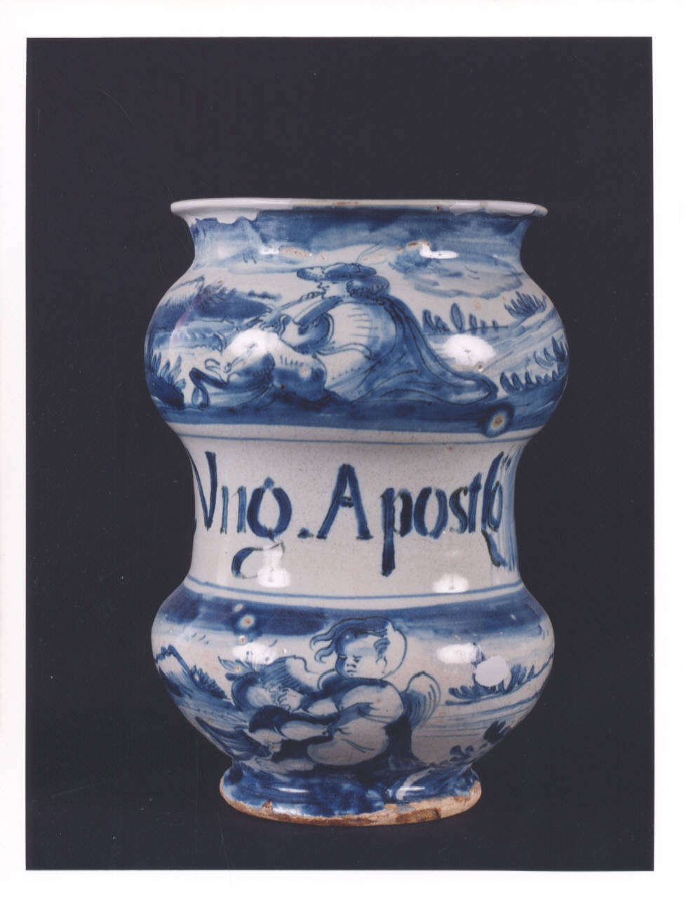

Alberello da farmacia
Bottega palermitana
Vaso cilindrico rastremato con cartiglio vuoto e decoro a foglie embricate.
- Tipologia
- Ceramica
- Luogo
- Palermo
- Materia
- Maiolica dipinta in blu, giallo e verde
- Stato di conservazione
- Buono
esplora il corpus attraversp il cirrus
Scarica il file xml/tei